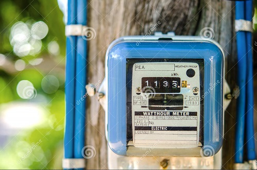
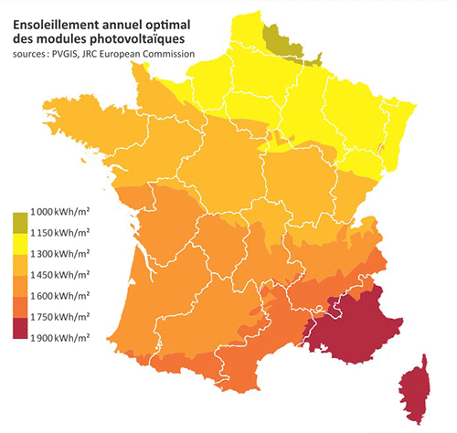
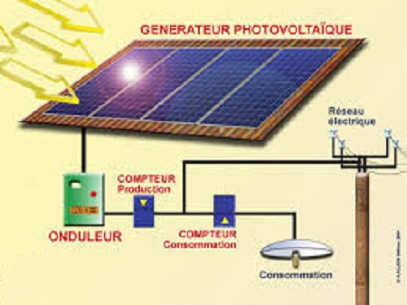

Cette unité mesure la différence de potentiel, ou tension (notée « U »), entre deux points d'un circuit électrique. En plomberie, la tension correspondrait à la pression de l'eau.
Il s'agit de l'intensité (notée « I ») d'un courant électrique circulant, autrement dit la quantité d'électrons qui traverse un point du circuit en 1 seconde. En plomberie, l'intensité serait le débit d'eau dans le tuyau.
Exprimé normalement en Coulomb, l'ampère. heure permet de mesurer la quantité d'électricité passant par un point d'un circuit électrique en une heure. En plomberie, on parlerait d'un volume d'eau.
Non, cela n'est pas un coton grec ! Le Watt crête est la puissance maximale atteignable par un système électrique donné, ici un panneau ou un ensemble de panneaux photovoltaïques. Cette caractéristique est mesurée par les fabricants des cellules dans des conditions « standards » (irradiation solaire de 1000 W/m2 ; température 25°c), ce qui permet de comparer les différentes technologies et/ou modèles de panneaux entre eux.
Il s'agit tout simplement de la puissance fournie par les panneaux en une heure de fonctionnement effectif. Cette mesure matérialise la quantité d'énergie vendue (ou achetée). Elle est donc naturellement à la base de la facturation. Le Watt heure étant une assez petite quantité d'énergie, on utilise souvent ses multiples : le KiloWatt heure (1 KWh = 1000 Wh) et le MégaWatt heure (1 MWh = 1000 KWh = 1 000 000 Wh).
Exprimée en VoltsAmperes (ou KiloVolts Ampère : KVA), elle mesure la puissance réellement injectée dans le réseau par l'installation. En effet, comme tout système, une installation photovoltaïque perd une partie de sa production dans son propre fonctionnement. Les électrons émis par les cellules photovoltaïques vont notamment parcourir des fils électriques (pertes par effet joule), puis être transformés en courant alternatif (pertes dans l'onduleur). Pour le gestionnaire du réseau électrique, cela n'est donc pas la puissance de vos panneaux qui compte, mais la « puissance apparente » effective de votre installation. C'est pourquoi un certain nombre de critères administratifs sont indiqués en KVA.
Pour des modules photoélectriques, le rendement correspond à la part de l'énergie solaire frappant les cellules effectivement transformée en courant continu à la sortie des panneaux. En effet, une quantité non négligeable des photons constituant la lumière du soleil est perdue (notamment par réflexion et diffusion au niveau de la vitre du module). Aujourd'hui, la majorité des cellules du marché ne dépassent pas 20%, mais les chercheurs ont déjà dépassé les 35% en laboratoire et espèrent tangenter l'actuelle limite théorique établie à 50%. Pour un onduleur, le rendement correspond à la part de courant continu effectivement transformée en courant alternatif. Le reste étant dissipé, notamment par effet joule, lors de la transformation. Pour une installation complète, le rendement correspond à la part de l'énergie solaire frappant les cellules effectivement transformée en courant alternatif utilisable. Elle est globalement égale au produit du rendement des panneaux par celui de l'onduleur (auxquels il faut ajouter les pertes dans le câblage, les compteurs, etc.).
* des panneaux solaires produisant un courant continu
* un « contrôleur » regroupant les sorties de tous les panneaux
* un interrupteur de sécurité
* des câbles
* un onduleur transformant le courant continu en courant alternatif (le 220v-50Hz utilisé dans la maison)
* éventuellement un boitier d'information et de gestion du système.
* Pour une installation isolée : - des batteries ; - éventuellement une sortie en courant continu pour utiliser directement des appareils fonctionnant en 12V ; - une source d'électricité d'appoint (groupe électrogène)
* Pour une installation en autoconsommation : - un boîtier de délestage et de sélection de source pour s'approvisionner au réseau public si nécessaire ; - éventuellement des batteries
* Pour une installation en revente de l'excédent (ou « vente du surplus ») ; - un compteur de production mesurant l'énergie injectée sur le réseau ; - un compteur d'autoconsommation ; - un boîtier de délestage et de sélection de source
* Pour une installation en revente totale (de loin la plus fréquente) : - un compteur de production mesurant l'énergie injectée sur le réseau ; - un compteur de non consommation